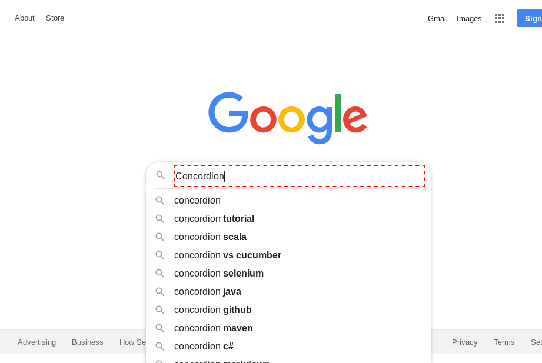
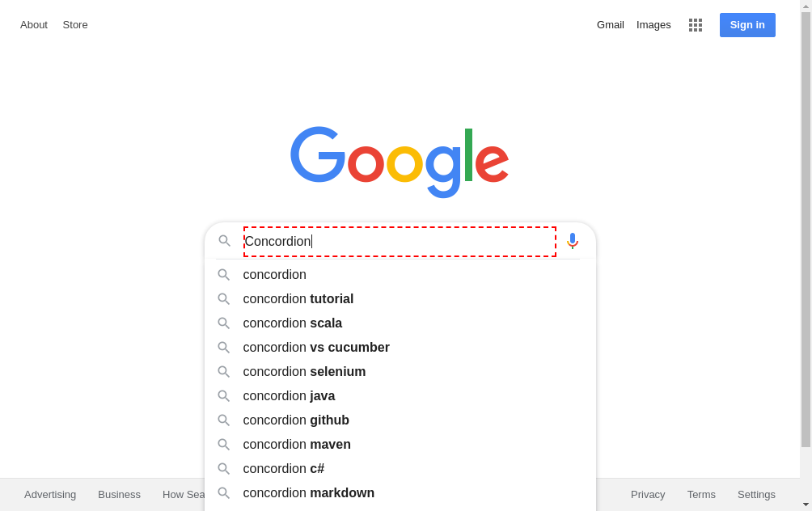

| 1. | INFO |
Starting example switch-browser for test fixture example.cubanowebdriver.SwitchBrowser |
06:29:09.610 |
CubanoDemoFixtureLogger.java |
15 |
| 2. | DEBUG |
Navigating to ⇒ https://www.google.co.nz |
06:29:09.621 |
TestWorker.java |
108 |
| 3. Page Object: GoogleSearchPage |
| 4. | DEBUG |
Wait for any ajax requests to complete |
06:29:09.953 |
PageObject.java |
40 |
| 5. | TRACE |
Run JavaScript ⇒ |
06:29:09.974 |
TestWorker.java |
108 |
|
var frame = window.frameElement;if (!frame) { return '';}if (frame.name) { return frame.name;}if (frame.id) { return frame.id;}return 'UNKNOWN FRAME';
|
| 6. | TRACE |
Run JavaScript ⇒ |
06:29:09.985 |
TestWorker.java |
108 |
|
if (typeof jQuery === 'undefined') return true;
if (jQuery.active != 0) return false;
return true;
|
| 7. | TRACE |
Find element ⇒ By.className: Spinner |
06:29:10.000 |
TestWorker.java |
108 |
| 8. | DEBUG |
Checking GoogleSearchPage loads within 10 seconds |
06:29:10.026 |
ActionTimer.java |
63 |
| 9. | TRACE |
Find element ⇒ By.name: q |
06:29:10.028 |
TestWorker.java |
108 |
| 10. | TRACE |
GoogleSearchPage loaded in 0 seconds
Current url: https://www.google.co.nz/ |
06:29:10.109 |
PageObject.java |
55 |
| 11. | DEBUG |
Change value ⇒ of By.name: q from '[Concordion]' to '[Concordion]' |
06:29:10.182 |
TestWorker.java |
108 |
| 12. | DEBUG |
Clicking 'Concordion' |
06:29:10.390 |
GoogleSearchPage.java |
48 |
|

|
| 13. | TRACE |
Find element ⇒ By.id: resultStats |
06:29:10.423 |
TestWorker.java |
108 |
| 14. | TRACE |
Selenium Error ⇒ Unable to locate element: #resultStats
For documentation on this error, please visit: https://www.seleniumhq.org/exceptions/no_such_element.html
Build info: version: '3.141.59', revision: 'e82be7d358', time: '2018-11-14T08:17:03'
System info: host: 'localhost', ip: '127.0.0.1', os.name: 'Linux', os.arch: 'amd64', os.version: '4.4.0-101-generic', java.version: '1.8.0_151'
Driver info: org.openqa.selenium.firefox.FirefoxDriver
Capabilities {acceptInsecureCerts: true, browserName: firefox, browserVersion: 66.0.5, javascriptEnabled: true, moz:accessibilityChecks: false, moz:geckodriverVersion: 0.24.0, moz:headless: false, moz:processID: 7000, moz:profile: /tmp/rust_mozprofile.HygKLz..., moz:shutdownTimeout: 60000, moz:useNonSpecCompliantPointerOrigin: false, moz:webdriverClick: true, pageLoadStrategy: normal, platform: LINUX, platformName: LINUX, platformVersion: 4.4.0-101-generic, rotatable: false, setWindowRect: true, strictFileInteractability: false, timeouts: {implicit: 0, pageLoad: 300000, script: 30000}, unhandledPromptBehavior: dismiss and notify}
Session ID: 9aa6ba81-9cfa-4464-bc4c-87556805f172
*** Element info: {Using=id, value=resultStats} |
06:29:10.435 |
TestWorker.java |
108 |
| 15. | TRACE |
Find element ⇒ By.cssSelector: div.rc |
06:29:10.950 |
TestWorker.java |
108 |
| 16. | TRACE |
Find element ⇒ By.tagName: cite in By.css selector: div.rc |
06:29:11.006 |
TestWorker.java |
108 |
| 17. | DEBUG |
Completed |
06:29:11.257 |
StoryboardListener.java |
323 |
|

|
| 18. | DEBUG |
Registering org.concordion.cubano.driver.web.provider.ChromeBrowserProvider@656c0b51 to SUITE. |
06:29:11.262 |
ConcordionBase.java |
75 |
| 19. | DEBUG |
Registering org.concordion.cubano.driver.web.Browser@354ccf56 to SUITE. |
06:29:11.264 |
ConcordionBase.java |
75 |
| 20. | DEBUG |
Starting browser |
06:29:11.267 |
Browser.java |
153 |
| 21. | TRACE |
Property wdm.chromeDriverVersion not found in /webdrivermanager.properties, using default values (in /webdrivermanager.properties) |
06:29:11.270 |
Config.java |
207 |
| 22. | TRACE |
Property wdm.chromeDriverVersion not found in /webdrivermanager.properties, using blank value |
06:29:11.273 |
Config.java |
214 |
| 23. | TRACE |
Property wdm.proxy not found in /webdrivermanager.properties, using default values (in /webdrivermanager.properties) |
06:29:11.277 |
Config.java |
207 |
| 24. | TRACE |
Property wdm.proxy not found in /webdrivermanager.properties, using blank value |
06:29:11.278 |
Config.java |
214 |
| 25. | TRACE |
Property wdm.binaryPath not found in /webdrivermanager.properties, using default values (in /webdrivermanager.properties) |
06:29:11.283 |
Config.java |
207 |
| 26. | TRACE |
Property wdm.binaryPath not found in /webdrivermanager.properties, using blank value |
06:29:11.284 |
Config.java |
214 |
| 27. | TRACE |
Running command on the shell: [google-chrome, --version] |
06:29:11.287 |
Shell.java |
55 |
| 28. | TRACE |
Result: Google Chrome 79.0.3945.130 |
06:29:11.351 |
Shell.java |
57 |
| 29. | TRACE |
Detected Google Chrome version 79 |
06:29:11.352 |
WebDriverManager.java |
553 |
| 30. | TRACE |
Using preferences true |
06:29:11.353 |
WebDriverManager.java |
584 |
| 31. | TRACE |
Getting driver version from local properties for chrome79 |
06:29:11.360 |
WebDriverManager.java |
630 |
| 32. | TRACE |
Reading local version.properties to find out driver version |
06:29:11.363 |
WebDriverManager.java |
664 |
| 33. | DEBUG |
Driver for chrome79 not found in local properties |
06:29:11.365 |
WebDriverManager.java |
634 |
| 34. | TRACE |
Reading online version.properties to find out driver version |
06:29:11.366 |
WebDriverManager.java |
664 |
| 35. | INFO |
Using chromedriver 79.0.3945.36 (since Google Chrome 79 is installed in your machine) |
06:29:11.535 |
WebDriverManager.java |
567 |
| 36. | TRACE |
Managing chromedriver arch=64 version=79.0.3945.36 getLatest=false cache=true |
06:29:11.547 |
WebDriverManager.java |
504 |
| 37. | TRACE |
Checking if chromedriver exists in cache |
06:29:11.556 |
WebDriverManager.java |
807 |
| 38. | TRACE |
Target path /home/travis/.m2/repository/webdriver |
06:29:11.566 |
Downloader.java |
116 |
| 39. | TRACE |
Filter cache by chromedriver -- input list [/home/travis/.m2/repository/webdriver/geckodriver/linux64/0.24.0/geckodriver] -- output list [] |
06:29:11.567 |
WebDriverManager.java |
847 |
| 40. | TRACE |
Filter cache by 79.0.3945.36 -- input list [] -- output list [] |
06:29:11.569 |
WebDriverManager.java |
847 |
| 41. | TRACE |
Filter cache by linux -- input list [] -- output list [] |
06:29:11.569 |
WebDriverManager.java |
847 |
| 42. | TRACE |
Filter cache by 64 -- input list [] -- output list [] |
06:29:11.570 |
WebDriverManager.java |
847 |
| 43. | TRACE |
chromedriver not found in cache |
06:29:11.570 |
WebDriverManager.java |
834 |
| 44. | TRACE |
Using preferences true |
06:29:11.572 |
WebDriverManager.java |
584 |
| 45. | DEBUG |
Storing preference chrome79=79.0.3945.36 (valid until 2020-01-21 07:29:11) |
06:29:11.573 |
Preferences.java |
66 |
| 46. | INFO |
Reading https://chromedriver.storage.googleapis.com/ to seek chromedriver |
06:29:11.575 |
WebDriverManager.java |
1006 |
| 47. | TRACE |
All URLs: [https://chromedriver.storage.googleapis.com/2.0/chromedriver_linux32.zip, https://chromedriver.storage.googleapis.com/2.0/chromedriver_linux64.zip, https://chromedriver.storage.googleapis.com/2.0/chromedriver_mac32.zip, https://chromedriver.storage.googleapis.com/2.0/chromedriver_win32.zip, https://chromedriver.storage.googleapis.com/2.1/chromedriver_linux32.zip, https://chromedriver.storage.googleapis.com/2.1/chromedriver_linux64.zip, https://chromedriver.storage.googleapis.com/2.1/chromedriver_mac32.zip, https://chromedriver.storage.googleapis.com/2.1/chromedriver_win32.zip, https://chromedriver.storage.googleapis.com/2.10/chromedriver_linux32.zip, https://chromedriver.storage.googleapis.com/2.10/chromedriver_linux64.zip, https://chromedriver.storage.googleapis.com/2.10/chromedriver_mac32.zip, https://chromedriver.storage.googleapis.com/2.10/chromedriver_win32.zip, https://chromedriver.storage.googleapis.com/2.10/notes.txt, https://chromedriver.storage.googleapis.com/2.11/chromedriver_linux32.zip, https://chromedriver.storage.googleapis.com/2.11/chromedriver_linux64.zip, https://chromedriver.storage.googleapis.com/2.11/chromedriver_mac32.zip, https://chromedriver.storage.googleapis.com/2.11/chromedriver_win32.zip, https://chromedriver.storage.googleapis.com/2.11/notes.txt, https://chromedriver.storage.googleapis.com/2.12/chromedriver_linux32.zip, https://chromedriver.storage.googleapis.com/2.12/chromedriver_linux64.zip, https://chromedriver.storage.googleapis.com/2.12/chromedriver_mac32.zip, https://chromedriver.storage.googleapis.com/2.12/chromedriver_win32.zip, https://chromedriver.storage.googleapis.com/2.12/notes.txt, https://chromedriver.storage.googleapis.com/2.13/chromedriver_linux32.zip, https://chromedriver.storage.googleapis.com/2.13/chromedriver_linux64.zip, https://chromedriver.storage.googleapis.com/2.13/chromedriver_mac32.zip, https://chromedriver.storage.googleapis.com/2.13/chromedriver_win32.zip, https://chromedriver.storage.googleapis.com/2.13/notes.txt, https://chromedriver.storage.googleapis.com/2.14/chromedriver_linux32.zip, https://chromedriver.storage.googleapis.com/2.14/chromedriver_linux64.zip, https://chromedriver.storage.googleapis.com/2.14/chromedriver_mac32.zip, https://chromedriver.storage.googleapis.com/2.14/chromedriver_win32.zip, https://chromedriver.storage.googleapis.com/2.14/notes.txt, https://chromedriver.storage.googleapis.com/2.15/chromedriver_linux32.zip, https://chromedriver.storage.googleapis.com/2.15/chromedriver_linux64.zip, https://chromedriver.storage.googleapis.com/2.15/chromedriver_mac32.zip, https://chromedriver.storage.googleapis.com/2.15/chromedriver_win32.zip, https://chromedriver.storage.googleapis.com/2.15/notes.txt, https://chromedriver.storage.googleapis.com/2.16/chromedriver_linux32.zip, https://chromedriver.storage.googleapis.com/2.16/chromedriver_linux64.zip, https://chromedriver.storage.googleapis.com/2.16/chromedriver_mac32.zip, https://chromedriver.storage.googleapis.com/2.16/chromedriver_win32.zip, https://chromedriver.storage.googleapis.com/2.16/notes.txt, https://chromedriver.storage.googleapis.com/2.17/chromedriver_linux64.zip, https://chromedriver.storage.googleapis.com/2.17/chromedriver_mac32.zip, https://chromedriver.storage.googleapis.com/2.17/chromedriver_win32.zip, https://chromedriver.storage.googleapis.com/2.18/chromedriver_linux32.zip, https://chromedriver.storage.googleapis.com/2.18/chromedriver_linux64.zip, https://chromedriver.storage.googleapis.com/2.18/chromedriver_mac32.zip, https://chromedriver.storage.googleapis.com/2.18/chromedriver_win32.zip, https://chromedriver.storage.googleapis.com/2.18/notes.txt, https://chromedriver.storage.googleapis.com/2.19/chromedriver_linux32.zip, https://chromedriver.storage.googleapis.com/2.19/chromedriver_linux64.zip, https://chromedriver.storage.googleapis.com/2.19/chromedriver_mac32.zip, https://chromedriver.storage.googleapis.com/2.19/chromedriver_win32.zip, https://chromedriver.storage.googleapis.com/2.19/notes.txt, https://chromedriver.storage.googleapis.com/2.2/chromedriver_linux32.zip, https://chromedriver.storage.googleapis.com/2.2/chromedriver_linux64.zip, https://chromedriver.storage.googleapis.com/2.2/chromedriver_mac32.zip, https://chromedriver.storage.googleapis.com/2.2/chromedriver_win32.zip, https://chromedriver.storage.googleapis.com/2.20/chromedriver_linux32.zip, https://chromedriver.storage.googleapis.com/2.20/chromedriver_linux64.zip, https://chromedriver.storage.googleapis.com/2.20/chromedriver_mac32.zip, https://chromedriver.storage.googleapis.com/2.20/chromedriver_win32.zip, https://chromedriver.storage.googleapis.com/2.20/notes.txt, https://chromedriver.storage.googleapis.com/2.21/chromedriver_linux32.zip, https://chromedriver.storage.googleapis.com/2.21/chromedriver_linux64.zip, https://chromedriver.storage.googleapis.com/2.21/chromedriver_mac32.zip, https://chromedriver.storage.googleapis.com/2.21/chromedriver_win32.zip, https://chromedriver.storage.googleapis.com/2.21/notes.txt, https://chromedriver.storage.googleapis.com/2.22/chromedriver_linux32.zip, https://chromedriver.storage.googleapis.com/2.22/chromedriver_linux64.zip, https://chromedriver.storage.googleapis.com/2.22/chromedriver_mac32.zip, https://chromedriver.storage.googleapis.com/2.22/chromedriver_win32.zip, https://chromedriver.storage.googleapis.com/2.22/notes.txt, https://chromedriver.storage.googleapis.com/2.23/chromedriver_linux32.zip, https://chromedriver.storage.googleapis.com/2.23/chromedriver_linux64.zip, https://chromedriver.storage.googleapis.com/2.23/chromedriver_mac64.zip, https://chromedriver.storage.googleapis.com/2.23/chromedriver_win32.zip, https://chromedriver.storage.googleapis.com/2.23/notes.txt, https://chromedriver.storage.googleapis.com/2.24/chromedriver_linux32.zip, https://chromedriver.storage.googleapis.com/2.24/chromedriver_linux64.zip, https://chromedriver.storage.googleapis.com/2.24/chromedriver_mac64.zip, https://chromedriver.storage.googleapis.com/2.24/chromedriver_win32.zip, https://chromedriver.storage.googleapis.com/2.24/notes.txt, https://chromedriver.storage.googleapis.com/2.25/chromedriver_linux32.zip, https://chromedriver.storage.googleapis.com/2.25/chromedriver_linux64.zip, https://chromedriver.storage.googleapis.com/2.25/chromedriver_mac64.zip, https://chromedriver.storage.googleapis.com/2.25/chromedriver_win32.zip, https://chromedriver.storage.googleapis.com/2.25/notes.txt, https://chromedriver.storage.googleapis.com/2.26/chromedriver_linux32.zip, https://chromedriver.storage.googleapis.com/2.26/chromedriver_linux64.zip, https://chromedriver.storage.googleapis.com/2.26/chromedriver_mac64.zip, https://chromedriver.storage.googleapis.com/2.26/chromedriver_win32.zip, https://chromedriver.storage.googleapis.com/2.26/notes.txt, https://chromedriver.storage.googleapis.com/2.27/chromedriver_linux32.zip, https://chromedriver.storage.googleapis.com/2.27/chromedriver_linux64.zip, https://chromedriver.storage.googleapis.com/2.27/chromedriver_mac64.zip, https://chromedriver.storage.googleapis.com/2.27/chromedriver_win32.zip, https://chromedriver.storage.googleapis.com/2.27/notes.txt, https://chromedriver.storage.googleapis.com/2.28/chromedriver_linux32.zip, https://chromedriver.storage.googleapis.com/2.28/chromedriver_linux64.zip, https://chromedriver.storage.googleapis.com/2.28/chromedriver_mac64.zip, https://chromedriver.storage.googleapis.com/2.28/chromedriver_win32.zip, https://chromedriver.storage.googleapis.com/2.28/notes.txt, https://chromedriver.storage.googleapis.com/2.29/chromedriver_linux32.zip, https://chromedriver.storage.googleapis.com/2.29/chromedriver_linux64.zip, https://chromedriver.storage.googleapis.com/2.29/chromedriver_mac64.zip, https://chromedriver.storage.googleapis.com/2.29/chromedriver_win32.zip, https://chromedriver.storage.googleapis.com/2.29/notes.txt, https://chromedriver.storage.googleapis.com/2.3/chromedriver_linux32.zip, https://chromedriver.storage.googleapis.com/2.3/chromedriver_linux64.zip, https://chromedriver.storage.googleapis.com/2.3/chromedriver_mac32.zip, https://chromedriver.storage.googleapis.com/2.3/chromedriver_win32.zip, https://chromedriver.storage.googleapis.com/2.3/notes.txt, https://chromedriver.storage.googleapis.com/2.30/chromedriver_linux32.zip, https://chromedriver.storage.googleapis.com/2.30/chromedriver_linux64.zip, https://chromedriver.storage.googleapis.com/2.30/chromedriver_mac64.zip, https://chromedriver.storage.googleapis.com/2.30/chromedriver_win32.zip, https://chromedriver.storage.googleapis.com/2.30/notes.txt, https://chromedriver.storage.googleapis.com/2.31/chromedriver_linux32.zip, https://chromedriver.storage.googleapis.com/2.31/chromedriver_linux64.zip, https://chromedriver.storage.googleapis.com/2.31/chromedriver_mac64.zip, https://chromedriver.storage.googleapis.com/2.31/chromedriver_win32.zip, https://chromedriver.storage.googleapis.com/2.31/notes.txt, https://chromedriver.storage.googleapis.com/2.32/chromedriver_linux32.zip, https://chromedriver.storage.googleapis.com/2.32/chromedriver_linux64.zip, https://chromedriver.storage.googleapis.com/2.32/chromedriver_mac64.zip, https://chromedriver.storage.googleapis.com/2.32/chromedriver_win32.zip, https://chromedriver.storage.googleapis.com/2.32/notes.txt, https://chromedriver.storage.googleapis.com/2.33/chromedriver_linux32.zip, https://chromedriver.storage.googleapis.com/2.33/chromedriver_linux64.zip, https://chromedriver.storage.googleapis.com/2.33/chromedriver_mac64.zip, https://chromedriver.storage.googleapis.com/2.33/chromedriver_win32.zip, https://chromedriver.storage.googleapis.com/2.33/notes.txt, https://chromedriver.storage.googleapis.com/2.34/chromedriver_linux64.zip, https://chromedriver.storage.googleapis.com/2.34/chromedriver_mac64.zip, https://chromedriver.storage.googleapis.com/2.34/chromedriver_win32.zip, https://chromedriver.storage.googleapis.com/2.34/notes.txt, https://chromedriver.storage.googleapis.com/2.35/chromedriver_linux64.zip, https://chromedriver.storage.googleapis.com/2.35/chromedriver_mac64.zip, https://chromedriver.storage.googleapis.com/2.35/chromedriver_win32.zip, https://chromedriver.storage.googleapis.com/2.35/notes.txt, https://chromedriver.storage.googleapis.com/2.36/chromedriver_linux64.zip, https://chromedriver.storage.googleapis.com/2.36/chromedriver_mac64.zip, https://chromedriver.storage.googleapis.com/2.36/chromedriver_win32.zip, https://chromedriver.storage.googleapis.com/2.36/notes.txt, https://chromedriver.storage.googleapis.com/2.37/chromedriver_linux64.zip, https://chromedriver.storage.googleapis.com/2.37/chromedriver_mac64.zip, https://chromedriver.storage.googleapis.com/2.37/chromedriver_win32.zip, https://chromedriver.storage.googleapis.com/2.37/notes.txt, https://chromedriver.storage.googleapis.com/2.38/chromedriver_linux64.zip, https://chromedriver.storage.googleapis.com/2.38/chromedriver_mac64.zip, https://chromedriver.storage.googleapis.com/2.38/chromedriver_win32.zip, https://chromedriver.storage.googleapis.com/2.38/notes.txt, https://chromedriver.storage.googleapis.com/2.39/chromedriver_linux64.zip, https://chromedriver.storage.googleapis.com/2.39/chromedriver_mac64.zip, https://chromedriver.storage.googleapis.com/2.39/chromedriver_win32.zip, https://chromedriver.storage.googleapis.com/2.39/notes.txt, https://chromedriver.storage.googleapis.com/2.4/chromedriver_linux32.zip, https://chromedriver.storage.googleapis.com/2.4/chromedriver_linux64.zip, https://chromedriver.storage.googleapis.com/2.4/chromedriver_mac32.zip, https://chromedriver.storage.googleapis.com/2.4/chromedriver_win32.zip, https://chromedriver.storage.googleapis.com/2.4/notes.txt, https://chromedriver.storage.googleapis.com/2.40/chromedriver_linux64.zip, https://chromedriver.storage.googleapis.com/2.40/chromedriver_mac64.zip, https://chromedriver.storage.googleapis.com/2.40/chromedriver_win32.zip, https://chromedriver.storage.googleapis.com/2.40/notes.txt, https://chromedriver.storage.googleapis.com/2.41/chromedriver_linux64.zip, https://chromedriver.storage.googleapis.com/2.41/chromedriver_mac64.zip, https://chromedriver.storage.googleapis.com/2.41/chromedriver_win32.zip, https://chromedriver.storage.googleapis.com/2.41/notes.txt, https://chromedriver.storage.googleapis.com/2.42/chromedriver_linux64.zip, https://chromedriver.storage.googleapis.com/2.42/chromedriver_mac64.zip, https://chromedriver.storage.googleapis.com/2.42/chromedriver_win32.zip, https://chromedriver.storage.googleapis.com/2.42/notes.txt, https://chromedriver.storage.googleapis.com/2.43/chromedriver_linux64.zip, https://chromedriver.storage.googleapis.com/2.43/chromedriver_mac64.zip, https://chromedriver.storage.googleapis.com/2.43/chromedriver_win32.zip, https://chromedriver.storage.googleapis.com/2.43/notes.txt, https://chromedriver.storage.googleapis.com/2.44/chromedriver_linux64.zip, https://chromedriver.storage.googleapis.com/2.44/chromedriver_mac64.zip, https://chromedriver.storage.googleapis.com/2.44/chromedriver_win32.zip, https://chromedriver.storage.googleapis.com/2.44/notes.txt, https://chromedriver.storage.googleapis.com/2.45/chromedriver_linux64.zip, https://chromedriver.storage.googleapis.com/2.45/chromedriver_mac64.zip, https://chromedriver.storage.googleapis.com/2.45/chromedriver_win32.zip, https://chromedriver.storage.googleapis.com/2.45/notes.txt, https://chromedriver.storage.googleapis.com/2.46/chromedriver_linux64.zip, https://chromedriver.storage.googleapis.com/2.46/chromedriver_mac64.zip, https://chromedriver.storage.googleapis.com/2.46/chromedriver_win32.zip, https://chromedriver.storage.googleapis.com/2.46/notes.txt, https://chromedriver.storage.googleapis.com/2.5/chromedriver_linux32.zip, https://chromedriver.storage.googleapis.com/2.5/chromedriver_linux64.zip, https://chromedriver.storage.googleapis.com/2.5/chromedriver_mac32.zip, https://chromedriver.storage.googleapis.com/2.5/notes.txt, https://chromedriver.storage.googleapis.com/2.6/chromedriver_linux32.zip, https://chromedriver.storage.googleapis.com/2.6/chromedriver_linux64.zip, https://chromedriver.storage.googleapis.com/2.6/chromedriver_mac32.zip, https://chromedriver.storage.googleapis.com/2.6/chromedriver_win32.zip, https://chromedriver.storage.googleapis.com/2.6/chromedriver_win32_debug.zip, https://chromedriver.storage.googleapis.com/2.6/chromedriver_win32_debug_symbols.zip, https://chromedriver.storage.googleapis.com/2.6/notes.txt, https://chromedriver.storage.googleapis.com/2.7/chromedriver_linux32.zip, https://chromedriver.storage.googleapis.com/2.7/chromedriver_linux64.zip, https://chromedriver.storage.googleapis.com/2.7/chromedriver_mac32.zip, https://chromedriver.storage.googleapis.com/2.7/chromedriver_win32.zip, https://chromedriver.storage.googleapis.com/2.7/notes.txt, https://chromedriver.storage.googleapis.com/2.8/chromedriver_linux32.zip, https://chromedriver.storage.googleapis.com/2.8/chromedriver_linux64.zip, https://chromedriver.storage.googleapis.com/2.8/chromedriver_mac32.zip, https://chromedriver.storage.googleapis.com/2.8/chromedriver_win32.zip, https://chromedriver.storage.googleapis.com/2.8/notes.txt, https://chromedriver.storage.googleapis.com/2.9/chromedriver_linux32.zip, https://chromedriver.storage.googleapis.com/2.9/chromedriver_linux64.zip, https://chromedriver.storage.googleapis.com/2.9/chromedriver_mac32.zip, https://chromedriver.storage.googleapis.com/2.9/chromedriver_win32.zip, https://chromedriver.storage.googleapis.com/2.9/notes.txt, https://chromedriver.storage.googleapis.com/70.0.3538.16/chromedriver_linux64.zip, https://chromedriver.storage.googleapis.com/70.0.3538.16/chromedriver_mac64.zip, https://chromedriver.storage.googleapis.com/70.0.3538.16/chromedriver_win32.zip, https://chromedriver.storage.googleapis.com/70.0.3538.67/chromedriver_linux64.zip, https://chromedriver.storage.googleapis.com/70.0.3538.67/chromedriver_mac64.zip, https://chromedriver.storage.googleapis.com/70.0.3538.67/chromedriver_win32.zip, https://chromedriver.storage.googleapis.com/70.0.3538.97/chromedriver_linux64.zip, https://chromedriver.storage.googleapis.com/70.0.3538.97/chromedriver_mac64.zip, https://chromedriver.storage.googleapis.com/70.0.3538.97/chromedriver_win32.zip, https://chromedriver.storage.googleapis.com/71.0.3578.137/chromedriver_linux64.zip, https://chromedriver.storage.googleapis.com/71.0.3578.137/chromedriver_mac64.zip, https://chromedriver.storage.googleapis.com/71.0.3578.137/chromedriver_win32.zip, https://chromedriver.storage.googleapis.com/71.0.3578.30/chromedriver_linux64.zip, https://chromedriver.storage.googleapis.com/71.0.3578.30/chromedriver_mac64.zip, https://chromedriver.storage.googleapis.com/71.0.3578.30/chromedriver_win32.zip, https://chromedriver.storage.googleapis.com/71.0.3578.33/chromedriver_linux64.zip, https://chromedriver.storage.googleapis.com/71.0.3578.33/chromedriver_mac64.zip, https://chromedriver.storage.googleapis.com/71.0.3578.33/chromedriver_win32.zip, https://chromedriver.storage.googleapis.com/71.0.3578.80/chromedriver_linux64.zip, https://chromedriver.storage.googleapis.com/71.0.3578.80/chromedriver_mac64.zip, https://chromedriver.storage.googleapis.com/71.0.3578.80/chromedriver_win32.zip, https://chromedriver.storage.googleapis.com/72.0.3626.69/chromedriver_linux64.zip, https://chromedriver.storage.googleapis.com/72.0.3626.69/chromedriver_mac64.zip, https://chromedriver.storage.googleapis.com/72.0.3626.69/chromedriver_win32.zip, https://chromedriver.storage.googleapis.com/72.0.3626.7/chromedriver_linux64.zip, https://chromedriver.storage.googleapis.com/72.0.3626.7/chromedriver_mac64.zip, https://chromedriver.storage.googleapis.com/72.0.3626.7/chromedriver_win32.zip, https://chromedriver.storage.googleapis.com/73.0.3683.20/chromedriver_linux64.zip, https://chromedriver.storage.googleapis.com/73.0.3683.20/chromedriver_mac64.zip, https://chromedriver.storage.googleapis.com/73.0.3683.20/chromedriver_win32.zip, https://chromedriver.storage.googleapis.com/73.0.3683.20/notes.txt, https://chromedriver.storage.googleapis.com/73.0.3683.68/chromedriver_linux64.zip, https://chromedriver.storage.googleapis.com/73.0.3683.68/chromedriver_mac64.zip, https://chromedriver.storage.googleapis.com/73.0.3683.68/chromedriver_win32.zip, https://chromedriver.storage.googleapis.com/73.0.3683.68/notes.txt, https://chromedriver.storage.googleapis.com/74.0.3729.6/chromedriver_linux64.zip, https://chromedriver.storage.googleapis.com/74.0.3729.6/chromedriver_mac64.zip, https://chromedriver.storage.googleapis.com/74.0.3729.6/chromedriver_win32.zip, https://chromedriver.storage.googleapis.com/74.0.3729.6/notes.txt, https://chromedriver.storage.googleapis.com/75.0.3770.140/chromedriver_linux64.zip, https://chromedriver.storage.googleapis.com/75.0.3770.140/chromedriver_mac64.zip, https://chromedriver.storage.googleapis.com/75.0.3770.140/chromedriver_win32.zip, https://chromedriver.storage.googleapis.com/75.0.3770.140/notes.txt, https://chromedriver.storage.googleapis.com/75.0.3770.8/chromedriver_linux64.zip, https://chromedriver.storage.googleapis.com/75.0.3770.8/chromedriver_mac64.zip, https://chromedriver.storage.googleapis.com/75.0.3770.8/chromedriver_win32.zip, https://chromedriver.storage.googleapis.com/75.0.3770.8/notes.txt, https://chromedriver.storage.googleapis.com/75.0.3770.90/chromedriver_linux64.zip, https://chromedriver.storage.googleapis.com/75.0.3770.90/chromedriver_mac64.zip, https://chromedriver.storage.googleapis.com/75.0.3770.90/chromedriver_win32.zip, https://chromedriver.storage.googleapis.com/75.0.3770.90/notes.txt, https://chromedriver.storage.googleapis.com/76.0.3809.12/chromedriver_linux64.zip, https://chromedriver.storage.googleapis.com/76.0.3809.12/chromedriver_mac64.zip, https://chromedriver.storage.googleapis.com/76.0.3809.12/chromedriver_win32.zip, https://chromedriver.storage.googleapis.com/76.0.3809.12/notes.txt, https://chromedriver.storage.googleapis.com/76.0.3809.126/chromedriver_linux64.zip, https://chromedriver.storage.googleapis.com/76.0.3809.126/chromedriver_mac64.zip, https://chromedriver.storage.googleapis.com/76.0.3809.126/chromedriver_win32.zip, https://chromedriver.storage.googleapis.com/76.0.3809.126/notes.txt, https://chromedriver.storage.googleapis.com/76.0.3809.25/chromedriver_linux64.zip, https://chromedriver.storage.googleapis.com/76.0.3809.25/chromedriver_mac64.zip, https://chromedriver.storage.googleapis.com/76.0.3809.25/chromedriver_win32.zip, https://chromedriver.storage.googleapis.com/76.0.3809.25/notes.txt, https://chromedriver.storage.googleapis.com/76.0.3809.68/chromedriver_linux64.zip, https://chromedriver.storage.googleapis.com/76.0.3809.68/chromedriver_mac64.zip, https://chromedriver.storage.googleapis.com/76.0.3809.68/chromedriver_win32.zip, https://chromedriver.storage.googleapis.com/76.0.3809.68/notes.txt, https://chromedriver.storage.googleapis.com/77.0.3865.10/chromedriver_linux64.zip, https://chromedriver.storage.googleapis.com/77.0.3865.10/chromedriver_mac64.zip, https://chromedriver.storage.googleapis.com/77.0.3865.10/chromedriver_win32.zip, https://chromedriver.storage.googleapis.com/77.0.3865.10/notes.txt, https://chromedriver.storage.googleapis.com/77.0.3865.40/chromedriver_linux64.zip, https://chromedriver.storage.googleapis.com/77.0.3865.40/chromedriver_mac64.zip, https://chromedriver.storage.googleapis.com/77.0.3865.40/chromedriver_win32.zip, https://chromedriver.storage.googleapis.com/77.0.3865.40/notes.txt, https://chromedriver.storage.googleapis.com/78.0.3904.105/chromedriver_linux64.zip, https://chromedriver.storage.googleapis.com/78.0.3904.105/chromedriver_mac64.zip, https://chromedriver.storage.googleapis.com/78.0.3904.105/chromedriver_win32.zip, https://chromedriver.storage.googleapis.com/78.0.3904.105/notes.txt, https://chromedriver.storage.googleapis.com/78.0.3904.11/chromedriver_linux64.zip, https://chromedriver.storage.googleapis.com/78.0.3904.11/chromedriver_mac64.zip, https://chromedriver.storage.googleapis.com/78.0.3904.11/chromedriver_win32.zip, https://chromedriver.storage.googleapis.com/78.0.3904.11/notes.txt, https://chromedriver.storage.googleapis.com/78.0.3904.70/chromedriver_linux64.zip, https://chromedriver.storage.googleapis.com/78.0.3904.70/chromedriver_mac64.zip, https://chromedriver.storage.googleapis.com/78.0.3904.70/chromedriver_win32.zip, https://chromedriver.storage.googleapis.com/78.0.3904.70/notes.txt, https://chromedriver.storage.googleapis.com/79.0.3945.16/chromedriver_linux64.zip, https://chromedriver.storage.googleapis.com/79.0.3945.16/chromedriver_mac64.zip, https://chromedriver.storage.googleapis.com/79.0.3945.16/chromedriver_win32.zip, https://chromedriver.storage.googleapis.com/79.0.3945.16/notes.txt, https://chromedriver.storage.googleapis.com/79.0.3945.36/chromedriver_linux64.zip, https://chromedriver.storage.googleapis.com/79.0.3945.36/chromedriver_mac64.zip, https://chromedriver.storage.googleapis.com/79.0.3945.36/chromedriver_win32.zip, https://chromedriver.storage.googleapis.com/79.0.3945.36/notes.txt, https://chromedriver.storage.googleapis.com/80.0.3987.16/chromedriver_linux64.zip, https://chromedriver.storage.googleapis.com/80.0.3987.16/chromedriver_mac64.zip, https://chromedriver.storage.googleapis.com/80.0.3987.16/chromedriver_win32.zip, https://chromedriver.storage.googleapis.com/80.0.3987.16/notes.txt, https://chromedriver.storage.googleapis.com/LATEST_RELEASE, https://chromedriver.storage.googleapis.com/LATEST_RELEASE_70, https://chromedriver.storage.googleapis.com/LATEST_RELEASE_70.0.3538, https://chromedriver.storage.googleapis.com/LATEST_RELEASE_71, https://chromedriver.storage.googleapis.com/LATEST_RELEASE_71.0.3578, https://chromedriver.storage.googleapis.com/LATEST_RELEASE_72, https://chromedriver.storage.googleapis.com/LATEST_RELEASE_72.0.3626, https://chromedriver.storage.googleapis.com/LATEST_RELEASE_73, https://chromedriver.storage.googleapis.com/LATEST_RELEASE_73.0.3683, https://chromedriver.storage.googleapis.com/LATEST_RELEASE_74, https://chromedriver.storage.googleapis.com/LATEST_RELEASE_74.0.3729, https://chromedriver.storage.googleapis.com/LATEST_RELEASE_75, https://chromedriver.storage.googleapis.com/LATEST_RELEASE_75.0.3770, https://chromedriver.storage.googleapis.com/LATEST_RELEASE_76, https://chromedriver.storage.googleapis.com/LATEST_RELEASE_76.0.3809, https://chromedriver.storage.googleapis.com/LATEST_RELEASE_77, https://chromedriver.storage.googleapis.com/LATEST_RELEASE_77.0.3865, https://chromedriver.storage.googleapis.com/LATEST_RELEASE_78, https://chromedriver.storage.googleapis.com/LATEST_RELEASE_78.0.3904, https://chromedriver.storage.googleapis.com/LATEST_RELEASE_79, https://chromedriver.storage.googleapis.com/LATEST_RELEASE_79.0.3945, https://chromedriver.storage.googleapis.com/LATEST_RELEASE_80, https://chromedriver.storage.googleapis.com/LATEST_RELEASE_80.0.3987, https://chromedriver.storage.googleapis.com/icons/back.gif, https://chromedriver.storage.googleapis.com/icons/binary.gif, https://chromedriver.storage.googleapis.com/icons/blank.gif, https://chromedriver.storage.googleapis.com/icons/folder.gif, https://chromedriver.storage.googleapis.com/index.html] |
06:29:11.830 |
WebDriverManager.java |
733 |
| 48. | TRACE |
Candidate URLs: [https://chromedriver.storage.googleapis.com/79.0.3945.36/chromedriver_linux64.zip, https://chromedriver.storage.googleapis.com/79.0.3945.36/chromedriver_mac64.zip, https://chromedriver.storage.googleapis.com/79.0.3945.36/chromedriver_win32.zip] |
06:29:11.860 |
WebDriverManager.java |
740 |
| 49. | TRACE |
URLs before filtering by OS (LINUX): [https://chromedriver.storage.googleapis.com/79.0.3945.36/chromedriver_linux64.zip, https://chromedriver.storage.googleapis.com/79.0.3945.36/chromedriver_mac64.zip, https://chromedriver.storage.googleapis.com/79.0.3945.36/chromedriver_win32.zip] |
06:29:11.866 |
UrlFilter.java |
47 |
| 50. | TRACE |
URLs after filtering by OS (LINUX): [https://chromedriver.storage.googleapis.com/79.0.3945.36/chromedriver_linux64.zip] |
06:29:11.866 |
UrlFilter.java |
62 |
| 51. | TRACE |
URLs before filtering by architecture (64): [https://chromedriver.storage.googleapis.com/79.0.3945.36/chromedriver_linux64.zip] |
06:29:11.867 |
UrlFilter.java |
68 |
| 52. | TRACE |
URLs after filtering by architecture (64): [https://chromedriver.storage.googleapis.com/79.0.3945.36/chromedriver_linux64.zip] |
06:29:11.867 |
UrlFilter.java |
86 |
| 53. | TRACE |
Property wdm.ignoreVersions not found in /webdrivermanager.properties, using default values (in /webdrivermanager.properties) |
06:29:11.868 |
Config.java |
207 |
| 54. | TRACE |
Property wdm.ignoreVersions not found in /webdrivermanager.properties, using blank value |
06:29:11.869 |
Config.java |
214 |
| 55. | TRACE |
Property wdm.ignoreVersions not found in /webdrivermanager.properties, using default values (in /webdrivermanager.properties) |
06:29:11.870 |
Config.java |
207 |
| 56. | TRACE |
Property wdm.ignoreVersions not found in /webdrivermanager.properties, using blank value |
06:29:11.870 |
Config.java |
214 |
| 57. | TRACE |
URLs before filtering by ignored versions ([]): [https://chromedriver.storage.googleapis.com/79.0.3945.36/chromedriver_linux64.zip] |
06:29:11.871 |
UrlFilter.java |
119 |
| 58. | TRACE |
URLs after filtering by ignored versions ([]): [https://chromedriver.storage.googleapis.com/79.0.3945.36/chromedriver_linux64.zip] |
06:29:11.871 |
UrlFilter.java |
134 |
| 59. | TRACE |
getTarget 79.0.3945.36 https://chromedriver.storage.googleapis.com/79.0.3945.36/chromedriver_linux64.zip |
06:29:11.872 |
Downloader.java |
87 |
| 60. | TRACE |
Target path /home/travis/.m2/repository/webdriver |
06:29:11.873 |
Downloader.java |
116 |
| 61. | TRACE |
Pre-download. target=/home/travis/.m2/repository/webdriver/chromedriver/linux64/79.0.3945.36/chromedriver_linux64.zip, version=79.0.3945.36 |
06:29:11.873 |
WebDriverManager.java |
453 |
| 62. | TRACE |
Target file for URL https://chromedriver.storage.googleapis.com/79.0.3945.36/chromedriver_linux64.zip version 79.0.3945.36 = /home/travis/.m2/repository/webdriver/chromedriver/linux64/79.0.3945.36/chromedriver_linux64.zip |
06:29:11.881 |
Downloader.java |
108 |
| 63. | INFO |
Downloading https://chromedriver.storage.googleapis.com/79.0.3945.36/chromedriver_linux64.zip |
06:29:11.887 |
Downloader.java |
128 |
| 64. | TRACE |
Target folder /home/travis/.m2/repository/webdriver/chromedriver/linux64/79.0.3945.36 ... using temporal file /tmp/3272151255566870346/chromedriver_linux64.zip |
06:29:11.894 |
Downloader.java |
133 |
| 65. | INFO |
Extracting binary from compressed file chromedriver_linux64.zip |
06:29:17.325 |
Downloader.java |
183 |
| 66. | TRACE |
Unzipping chromedriver (size: 10144248 KB, compressed size: 4874986 KB) |
06:29:17.328 |
Downloader.java |
219 |
| 67. | TRACE |
Setting file /tmp/3272151255566870346/chromedriver as executable |
06:29:17.398 |
Downloader.java |
305 |
| 68. | TRACE |
Deleting file /tmp/3272151255566870346/chromedriver_linux64.zip |
06:29:17.401 |
Downloader.java |
322 |
| 69. | TRACE |
Found binary in post-download: /tmp/3272151255566870346/chromedriver |
06:29:17.404 |
WebDriverManager.java |
462 |
| 70. | TRACE |
Resulting binary file /tmp/3272151255566870346/chromedriver |
06:29:17.405 |
Downloader.java |
203 |
| 71. | TRACE |
Deleting folder /tmp/3272151255566870346 |
06:29:17.408 |
Downloader.java |
332 |
| 72. | TRACE |
Binary driver after extraction /home/travis/.m2/repository/webdriver/chromedriver/linux64/79.0.3945.36/chromedriver |
06:29:17.409 |
Downloader.java |
153 |
| 73. | INFO |
Exporting webdriver.chrome.driver as /home/travis/.m2/repository/webdriver/chromedriver/linux64/79.0.3945.36/chromedriver |
06:29:17.412 |
WebDriverManager.java |
1042 |
| 74. | DEBUG |
Navigating to ⇒ https://www.google.co.nz |
06:29:18.086 |
TestWorker.java |
108 |
| 75. Page Object: GoogleSearchPage |
| 76. | DEBUG |
Wait for any ajax requests to complete |
06:29:18.511 |
PageObject.java |
40 |
| 77. | TRACE |
Run JavaScript ⇒ |
06:29:18.541 |
TestWorker.java |
108 |
|
var frame = window.frameElement;if (!frame) { return '';}if (frame.name) { return frame.name;}if (frame.id) { return frame.id;}return 'UNKNOWN FRAME';
|
| 78. | TRACE |
Run JavaScript ⇒ |
06:29:18.552 |
TestWorker.java |
108 |
|
if (typeof jQuery === 'undefined') return true;
if (jQuery.active != 0) return false;
return true;
|
| 79. | TRACE |
Find element ⇒ By.className: Spinner |
06:29:18.560 |
TestWorker.java |
108 |
| 80. | DEBUG |
Checking GoogleSearchPage loads within 10 seconds |
06:29:18.583 |
ActionTimer.java |
63 |
| 81. | TRACE |
Find element ⇒ By.name: q |
06:29:18.584 |
TestWorker.java |
108 |
| 82. | TRACE |
GoogleSearchPage loaded in 0 seconds
Current url: https://www.google.co.nz/ |
06:29:18.693 |
PageObject.java |
55 |
| 83. | DEBUG |
Change value ⇒ of By.name: q from '[Concordion]' to '[Concordion]' |
06:29:18.777 |
TestWorker.java |
108 |
| 84. | DEBUG |
Clicking 'Concordion' |
06:29:19.027 |
GoogleSearchPage.java |
48 |
|

|
| 85. | TRACE |
Find element ⇒ By.id: resultStats |
06:29:19.687 |
TestWorker.java |
108 |
| 86. | TRACE |
Find element ⇒ By.cssSelector: div.rc |
06:29:19.708 |
TestWorker.java |
108 |
| 87. | TRACE |
Find element ⇒ By.tagName: cite in By.css selector: div.rc |
06:29:19.731 |
TestWorker.java |
108 |
| 88. | DEBUG |
Completed |
06:29:19.956 |
StoryboardListener.java |
323 |
|
|
| 89. | DEBUG |
Navigating to ⇒ https://www.google.co.nz |
06:29:19.964 |
TestWorker.java |
108 |
| 90. Page Object: GoogleSearchPage |
| 91. | DEBUG |
Wait for any ajax requests to complete |
06:29:20.276 |
PageObject.java |
40 |
| 92. | TRACE |
Run JavaScript ⇒ |
06:29:20.297 |
TestWorker.java |
108 |
|
var frame = window.frameElement;if (!frame) { return '';}if (frame.name) { return frame.name;}if (frame.id) { return frame.id;}return 'UNKNOWN FRAME';
|
| 93. | TRACE |
Run JavaScript ⇒ |
06:29:20.315 |
TestWorker.java |
108 |
|
if (typeof jQuery === 'undefined') return true;
if (jQuery.active != 0) return false;
return true;
|
| 94. | TRACE |
Find element ⇒ By.className: Spinner |
06:29:20.332 |
TestWorker.java |
108 |
| 95. | DEBUG |
Checking GoogleSearchPage loads within 10 seconds |
06:29:20.348 |
ActionTimer.java |
63 |
| 96. | TRACE |
Find element ⇒ By.name: q |
06:29:20.349 |
TestWorker.java |
108 |
| 97. | TRACE |
GoogleSearchPage loaded in 0 seconds
Current url: https://www.google.co.nz/ |
06:29:20.437 |
PageObject.java |
55 |
| 98. | DEBUG |
Change value ⇒ of By.name: q from '[Concordion]' to '[Concordion]' |
06:29:20.507 |
TestWorker.java |
108 |
| 99. | DEBUG |
Clicking 'Concordion' |
06:29:20.747 |
GoogleSearchPage.java |
48 |
|

|
| 100. | TRACE |
Find element ⇒ By.id: resultStats |
06:29:20.773 |
TestWorker.java |
108 |
| 101. | TRACE |
Selenium Error ⇒ Unable to locate element: #resultStats
For documentation on this error, please visit: https://www.seleniumhq.org/exceptions/no_such_element.html
Build info: version: '3.141.59', revision: 'e82be7d358', time: '2018-11-14T08:17:03'
System info: host: 'localhost', ip: '127.0.0.1', os.name: 'Linux', os.arch: 'amd64', os.version: '4.4.0-101-generic', java.version: '1.8.0_151'
Driver info: org.openqa.selenium.firefox.FirefoxDriver
Capabilities {acceptInsecureCerts: true, browserName: firefox, browserVersion: 66.0.5, javascriptEnabled: true, moz:accessibilityChecks: false, moz:geckodriverVersion: 0.24.0, moz:headless: false, moz:processID: 7000, moz:profile: /tmp/rust_mozprofile.HygKLz..., moz:shutdownTimeout: 60000, moz:useNonSpecCompliantPointerOrigin: false, moz:webdriverClick: true, pageLoadStrategy: normal, platform: LINUX, platformName: LINUX, platformVersion: 4.4.0-101-generic, rotatable: false, setWindowRect: true, strictFileInteractability: false, timeouts: {implicit: 0, pageLoad: 300000, script: 30000}, unhandledPromptBehavior: dismiss and notify}
Session ID: 9aa6ba81-9cfa-4464-bc4c-87556805f172
*** Element info: {Using=id, value=resultStats} |
06:29:20.782 |
TestWorker.java |
108 |
| 102. | TRACE |
Find element ⇒ By.cssSelector: div.rc |
06:29:21.293 |
TestWorker.java |
108 |
| 103. | TRACE |
Find element ⇒ By.tagName: cite in By.css selector: div.rc |
06:29:21.307 |
TestWorker.java |
108 |
| 104. | INFO |
Finishing example switch-browser |
06:29:21.455 |
CubanoDemoFixtureLogger.java |
20 |
{kind=link}
{kind=link}
{kind=link}